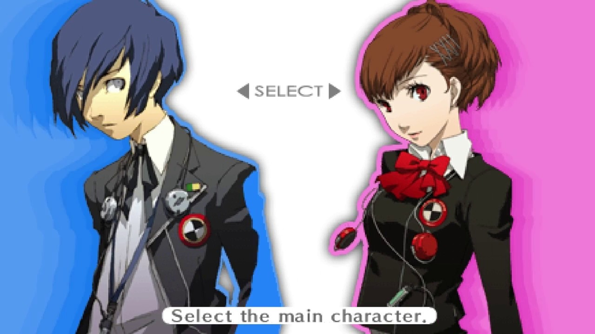
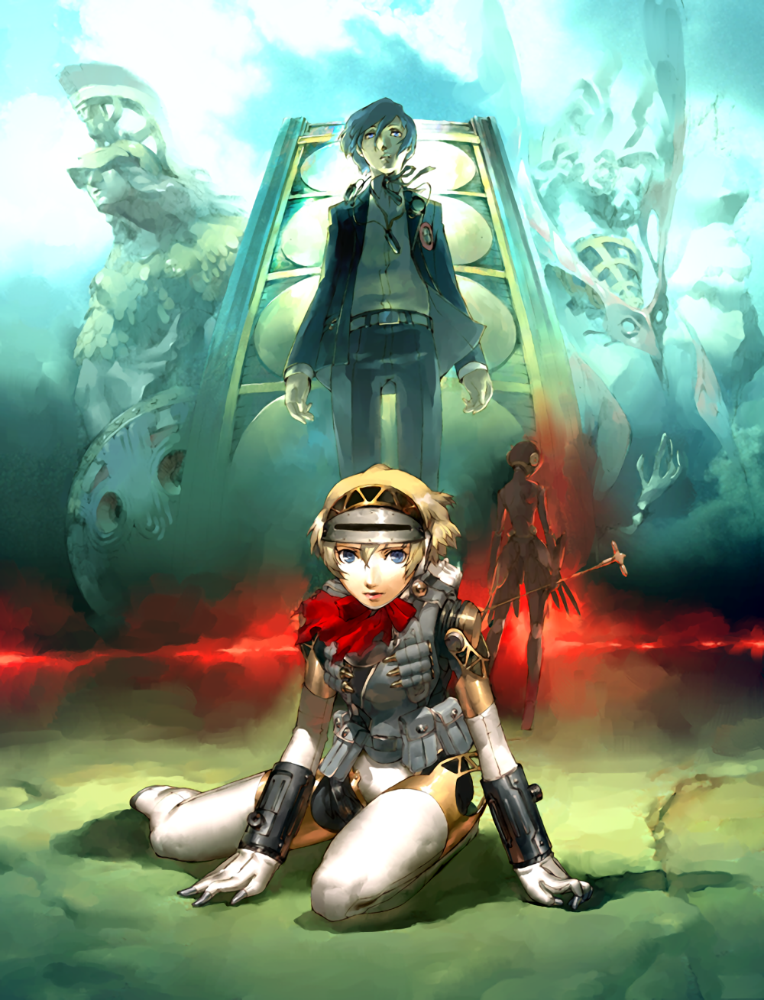

Sinopsis
Un adolescente que quedó huérfano a temprana edad regresa a la ciudad de su infancia, Iwatodai. Poco después de ser transferido a la escuela preparatoria Gekkoukan, es atacado por sombras, criaturas que se alimentan de la mente de sus víctimas. Este ataque despierta su Persona interior, Orpheus, su única oportunidad para vencer a estas criaturas de la noche. Pronto descubre que otros estudiantes de la escuela también tienen ese poder. De ellos aprende todo sobre la "Dark Hour" (Hora oscura), una hora oculta que separa un día del siguiente; y que sume al mundo en las sombras. Todo se paraliza, dejando campar a sus anchas a todas las sombras. El protagonista se une al grupo "Specialized Extracurricular Execution Squad" (Unidad Extraescolar Especializada en Ejecuciones -de sus misiones-, SEES), y con sus compañeros, lucha contra la amenaza de las sombras, y a la vez que exploran el Tartarus, una extraña y gigantesca torre repleta de peligros en la que se transforma la escuela durante la Dark Hour. Ademas de la entrega principal del videojuego y su versión mejorada "persona 3 fes", tambien se realizaron 4 peliculas que cuentan la historia del juego de una manera unica. Siendo este tambien un punto de gran cambio para la franquicia, puesto que en este, es donde se introducen por primera vez los "social links" los cuales, cambian de forma unica la el juego en ciertos momentos de un rpg a una novela visual.
ademas de la versión original del juego "persona 3" y la versión mejorada "persona 3 fes" tambien salio al mercado una version para PSP®4, llamada "persona 3 portable" la cual agrega una protagonista totalmente alternativa, la cual permite vivir la misma historia con ligeros cambios, para aquellos que ya vivieron previamente la experiencia.
¿Donde puedo jugarlo?
EL juego original y su version mejorada salieron para el PlayStation®2 y fueron porteados de manera digital a PlayStation®3 y PlayStation®4. Ademas de su version portable, la cual esta disponible en PSP®4
